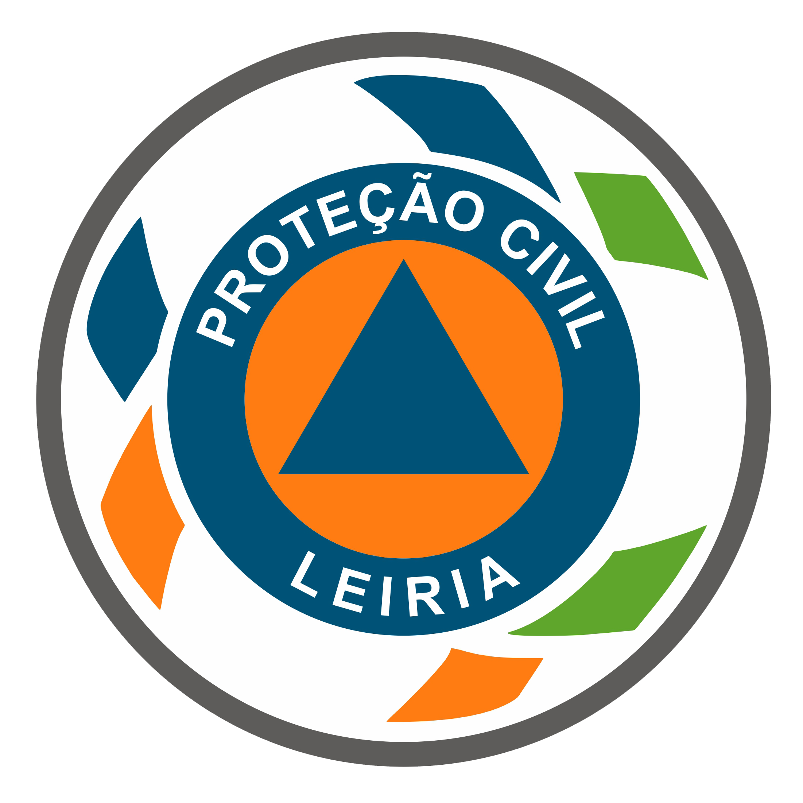

+<!doctype html>
<html lang="pt-PT"><head><meta charset="utf-8"><meta name="viewport" content="width=device-width, initial-scale=1, viewport-fit=cover"><meta name="theme-color" content="#12212b"><title>Pontos de Abastecimento</title><link rel="stylesheet" href="https://unpkg.com/leaflet@1.9.4/dist/leaflet.css"><style>
:root{--ink:#15232d;--muted:#60707b;--line:#d7dfe3;--paper:#f5f7f8;--nav:#12212b;--hydrant:#c53a31;--air:#136c9e;--ground:#bd6918}*{box-sizing:border-box}body{margin:0;font:15px system-ui,-apple-system,"Segoe UI",sans-serif;color:var(--ink);background:var(--paper)}header{height:70px;padding:12px 18px;background:var(--nav);color:#fff;display:flex;align-items:center;justify-content:space-between;gap:12px}h1{font-size:18px;margin:0;font-weight:650}header p{font-size:12px;color:#d3e0e6;margin:2px 0 0}.count{font-weight:700;font-size:13px;border:1px solid #58717e;border-radius:999px;padding:6px 9px;white-space:nowrap}main{height:calc(100vh - 70px);display:grid;grid-template-columns:365px 1fr}aside{background:#fff;border-right:1px solid var(--line);overflow:auto;padding:15px}.search{width:100%;border:1px solid var(--line);border-radius:9px;padding:11px;font:inherit}.types{display:grid;grid-template-columns:repeat(3,1fr);gap:6px;margin:12px 0}.type{border:1px solid var(--line);border-radius:8px;background:#fff;padding:8px 4px;line-height:1.15;color:var(--ink);font-size:12px;cursor:pointer}.type.active{background:var(--nav);color:#fff;border-color:var(--nav)}.type i{display:block;width:9px;height:9px;margin:0 auto 4px;border-radius:50%;background:var(--c)}.type.active i{background:currentColor}.filters{display:flex;align-items:center;justify-content:space-between;border-bottom:1px solid var(--line);padding-bottom:10px;color:var(--muted);font-size:13px}.filters label{display:flex;align-items:center;gap:6px}.point{display:block;width:100%;background:transparent;border:0;border-bottom:1px solid var(--line);padding:12px 2px;text-align:left;color:var(--ink);cursor:pointer}.point:active{background:#edf2f4}.point strong{font-size:14px;display:block}.point small{color:var(--muted);display:block;margin-top:3px}.badge{font-size:11px;display:inline-block;border-radius:99px;padding:2px 6px;margin-top:6px;background:#edf2f4;color:#40535e;font-weight:650}.badge.h{background:#fbe9e7;color:#912d27}.badge.a{background:#e2f1f8;color:#075c8c}.badge.t{background:#fff0df;color:#92500d}#map{height:100%;width:100%}.marker{width:17px;height:17px;border:2px solid white;border-radius:50%;box-shadow:0 1px 3px #3b485780}.marker.h{background:var(--hydrant)}.marker.a{background:var(--air)}.marker.t{background:var(--ground)}.popup h2{font-size:16px;margin:0 0 9px}.popup dl{display:grid;grid-template-columns:auto 1fr;gap:5px 10px;margin:0;font-size:13px}.popup dt{color:var(--muted)}.popup dd{margin:0;font-weight:600}.route{display:block;margin-top:12px;padding:9px;background:var(--nav);color:white!important;text-decoration:none;text-align:center;border-radius:7px;font-weight:700}@media(max-width:720px){header{height:62px;padding:9px 13px}h1{font-size:16px}header p{display:none}main{height:calc(100vh - 62px);display:flex;flex-direction:column}#map{height:53%;order:0}aside{height:47%;order:1;border-right:0;border-top:1px solid var(--line);padding:11px 13px}.types{margin:9px 0}.point{padding:10px 2px}.leaflet-control-zoom{display:none}}@media(min-width:721px){.leaflet-control-zoom{margin-top:14px!important}}
</style></head><body><header><div><h1>Pontos de Abastecimento</h1><p>Proteção e socorro · Hidrantes, meios aéreos e terrestres</p></div><span id="count" class="count"></span></header><main><aside><input id="search" class="search" type="search" placeholder="Procurar local, freguesia ou código" aria-label="Procurar ponto"><div class="types" role="group" aria-label="Tipos de abastecimento"><button class="type active" data-type="Hidrantes" style="--c:var(--hydrant)"><i></i>Hidrantes</button><button class="type active" data-type="Meios aéreos" style="--c:var(--air)"><i></i>Meios<br>aéreos</button><button class="type active" data-type="Terrestres" style="--c:var(--ground)"><i></i>Terrestres</button></div><div class="filters"><label><input id="operational" type="checkbox"> Só operacionais</label><span id="shown"></span></div><div id="list" aria-live="polite"></div></aside><div id="map" aria-label="Mapa dos pontos de abastecimento"></div></main><script src="https://unpkg.com/leaflet@1.9.4/dist/leaflet.js"></script><script src="dados-novos.js"></script><script>
const fix=s=>{try{return decodeURIComponent(escape(s||''))}catch{return s||''}},PONTOS=window.PONTOS.map(p=>({tipo:{H:'Hidrantes',A:'Meios aéreos',T:'Terrestres'}[p.t],nome:fix(p.n),lat:p.y,lng:p.x,freguesia:fix(p.f),arruamento:fix(p.r),equipamento:fix(p.e),classe:p.c,volume:p.v,operacional:p.o,codigo:fix(p.i)})),colors={Hidrantes:'h','Meios aéreos':'a',Terrestres:'t'},active=new Set(Object.keys(colors));const map=L.map('map',{zoomControl:true}).setView([39.80,-8.79],11);L.tileLayer('https://{s}.tile.openstreetmap.org/{z}/{x}/{y}.png',{maxZoom:19,attribution:'© OpenStreetMap'}).addTo(map);const layer=L.layerGroup().addTo(map),search=document.querySelector('#search'),list=document.querySelector('#list'),shown=document.querySelector('#shown'),count=document.querySelector('#count');const esc=s=>String(s||'').replace(/[&<>"']/g,c=>({'&':'&amp;','<':'&lt;','>':'&gt;','"':'&quot;',"'":'&#39;'}[c]));const vol=n=>n&&Number(n)?new Intl.NumberFormat('pt-PT').format(Number(n))+' m³':'Não indicado';function popup(p){let rows=`<dt>Tipo</dt><dd>${p.tipo}</dd>`;if(p.equipamento)rows+=`<dt>Equipamento</dt><dd>${esc(p.equipamento)}</dd>`;if(p.classe)rows+=`<dt>Classe</dt><dd>${esc(p.classe)}</dd>`;if(p.volume)rows+=`<dt>Volume máx.</dt><dd>${vol(p.volume)}</dd>`;if(p.freguesia)rows+=`<dt>Freguesia</dt><dd>${esc(p.freguesia)}</dd>`;if(p.arruamento)rows+=`<dt>Arruamento</dt><dd>${esc(p.arruamento)}</dd>`;if(p.codigo)rows+=`<dt>Código</dt><dd>${esc(p.codigo)}</dd>`;return `<div class="popup"><h2>${esc(p.nome)}</h2><dl>${rows}</dl><a class="route" target="_blank" rel="noopener" href="https://www.google.com/maps/dir/?api=1&destination=${p.lat},${p.lng}">Navegar até ao local</a></div>`}function draw(){const q=search.value.trim().toLocaleLowerCase('pt-PT'),onlyOp=document.querySelector('#operational').checked,visible=PONTOS.filter(p=>active.has(p.tipo)&&(!onlyOp||String(p.operacional)==='1'||/aberta|operacional/i.test(p.operacional||''))&&(!q||[p.nome,p.freguesia,p.arruamento,p.codigo].join(' ').toLocaleLowerCase('pt-PT').includes(q)));layer.clearLayers();list.innerHTML='';visible.forEach(p=>{const c=colors[p.tipo],m=L.marker([p.lat,p.lng],{icon:L.divIcon({className:'',html:`<div class="marker ${c}"></div>`,iconSize:[17,17],iconAnchor:[8,8]})}).bindPopup(popup(p));m.addTo(layer);const b=document.createElement('button');b.className='point';b.innerHTML=`<strong>${esc(p.nome)}</strong><small>${esc(p.arruamento||p.freguesia||'Localização sem detalhe')}</small><span class="badge ${c}">${esc(p.tipo)}</span>`;b.onclick=()=>{map.setView([p.lat,p.lng],16);m.openPopup()};list.append(b)});shown.textContent=`${visible.length} visíveis`;count.textContent=`${PONTOS.length} pontos`}document.querySelectorAll('.type').forEach(b=>b.onclick=()=>{const t=b.dataset.type;active.has(t)?active.delete(t):active.add(t);b.classList.toggle('active',active.has(t));draw()});search.addEventListener('input',draw);document.querySelector('#operational').addEventListener('change',draw);draw();
</script><script>
document.head.insertAdjacentHTML('beforeend',`<style>
header{height:82px}.brand{display:flex;align-items:center;gap:12px}.logos{display:flex;align-items:center;gap:9px}.logos img{display:block;object-fit:contain;background:transparent}.logos img:nth-child(1){width:48px;height:54px}.logos img:nth-child(2){width:54px;height:54px}.logos img:nth-child(3){width:48px;height:54px}.type:not(.active) i{background:#98a5ae!important}.map-tools{display:flex;gap:7px;margin:10px 0}.map-tools select,.map-tools button{font:inherit;border:1px solid var(--line);border-radius:8px;background:#fff;color:var(--ink);padding:8px}.map-tools select{flex:1}.map-tools button{white-space:nowrap}@media(max-width:720px){header{height:66px}.logos{gap:5px}.logos img:nth-child(1),.logos img:nth-child(3){width:34px;height:42px}.logos img:nth-child(2){width:40px;height:42px}main{height:calc(100vh - 66px)}.count{display:none}}
</style>`);
document.querySelector('header').innerHTML=`<div class="brand"><div><h1>Pontos de Abastecimento</h1><p>Prote&ccedil;&atilde;o e socorro</p></div></div><div class="logos"></div><span id="count" class="count"></span>`;document.querySelector('#count').textContent=`${PONTOS.length} pontos`;
document.querySelector('#operational').closest('label').style.display='none';
document.querySelector('.filters').insertAdjacentHTML('beforebegin',`<div class="map-tools"><label for="basemap">Tipo de mapa</label><select id="basemap" aria-label="Tipo de mapa"><option value="ruas">Mapa de ruas</option><option value="satelite">Vista a&eacute;rea</option><option value="relevo">Relevo</option></select><button id="gps" type="button">Minha localiza&ccedil;&atilde;o</button></div>`);
let userLocation=null,userMarker=null,userCircle=null;
function setMap(kind){const sources={ruas:['https://{s}.tile.openstreetmap.org/{z}/{x}/{y}.png','&copy; OpenStreetMap'],satelite:['https://server.arcgisonline.com/ArcGIS/rest/services/World_Imagery/MapServer/tile/{z}/{y}/{x}','Tiles &copy; Esri'],relevo:['https://{s}.tile.opentopomap.org/{z}/{x}/{y}.png','Map data: &copy; OpenTopoMap']};map.eachLayer(l=>{if(l instanceof L.TileLayer)map.removeLayer(l)});L.tileLayer(sources[kind][0],{maxZoom:19,attribution:sources[kind][1]}).addTo(map)}
document.querySelector('#basemap').addEventListener('change',e=>setMap(e.target.value));
document.querySelector('#gps').addEventListener('click',()=>{const btn=document.querySelector('#gps');if(!navigator.geolocation){btn.textContent='GPS indispon&iacute;vel';return}btn.textContent='A obter GPS...';navigator.geolocation.getCurrentPosition(pos=>{userLocation=[pos.coords.latitude,pos.coords.longitude];if(userMarker)map.removeLayer(userMarker);if(userCircle)map.removeLayer(userCircle);userMarker=L.marker(userLocation).addTo(map).bindPopup('A sua localiza&ccedil;&atilde;o');userCircle=L.circle(userLocation,{radius:pos.coords.accuracy,color:'#136c9e',fillColor:'#136c9e',fillOpacity:.12}).addTo(map);map.setView(userLocation,15);btn.textContent='Localiza&ccedil;&atilde;o atual'},()=>{btn.textContent='GPS sem permiss&atilde;o'},{enableHighAccuracy:true,timeout:10000,maximumAge:30000})});
map.on('popupopen',e=>{if(!userLocation)return;const p=e.popup._latlng,route=e.popup.getElement().querySelector('.route');if(route)route.href=`https://www.google.com/maps/dir/?api=1&origin=${userLocation[0]},${userLocation[1]}&destination=${p.lat},${p.lng}`});
</script><script src="limites.js"></script><script>
document.head.insertAdjacentHTML('beforeend',`<style>.app-footer{height:46px;background:#10202a;color:#c9d5da;display:flex;align-items:center;justify-content:center;text-align:center;font-size:11px;line-height:1.3;padding:5px}.app-footer strong{display:block;color:#fff;font-weight:600}body{padding-bottom:46px}main{height:calc(100vh - 128px)}@media(max-width:720px){main{height:calc(100vh - 112px)}.app-footer{height:46px}}</style>`);
document.querySelector('h1').textContent='Pontos de Abastecimento';document.querySelector('.brand p').textContent='Município de Leiria';document.body.insertAdjacentHTML('beforeend','<footer class="app-footer"><div><strong>SubChefe 2ª - João Paulo Pereira</strong>Companhia Bombeiros Sapadores Leiria</div></footer>');
const toLatLng=ring=>ring.map(([lng,lat])=>[lat,lng]);const boundary=LIMITE.features[0].geometry.coordinates[0];const exterior=[[-85,-180],[-85,180],[85,180],[85,-180]];L.polygon([exterior,toLatLng(boundary)],{stroke:false,fillColor:'#10202a',fillOpacity:.28,interactive:false}).addTo(map);const limiteLayer=L.geoJSON(LIMITE,{style:{color:'#183846',weight:3,fill:false,opacity:.95},interactive:false}).addTo(map);L.geoJSON(FREGUESIAS,{style:{color:'#365b69',weight:1,fill:false,opacity:.78},interactive:false}).addTo(map);map.fitBounds(limiteLayer.getBounds(),{padding:[18,18],maxZoom:12});
</script><script>
document.head.insertAdjacentHTML('beforeend',`<style>@media(max-width:720px){html,body{height:100%;overflow:hidden}aside{overflow-y:auto;overscroll-behavior:contain;-webkit-overflow-scrolling:touch}.point{min-height:64px}}</style>`);
document.querySelector('#search').placeholder='Procurar local, freguesia ou c\u00f3digo';
</script><script>
document.querySelector('[data-type="Meios aéreos"]').innerHTML='<i></i>Meios<br>a\u00e9reos';
</script><script>
document.head.insertAdjacentHTML('beforeend',`<style>.app-footer{position:fixed;left:0;right:0;bottom:0;z-index:1200}.app-footer strong{font-weight:600}</style>`);
const footer=document.querySelector('.app-footer');if(footer)footer.innerHTML='<div><strong>SubChefe 2\u00aa - Jo\u00e3o Paulo Pereira</strong>Companhia Bombeiros Sapadores Leiria</div>';
</script></body></html>
